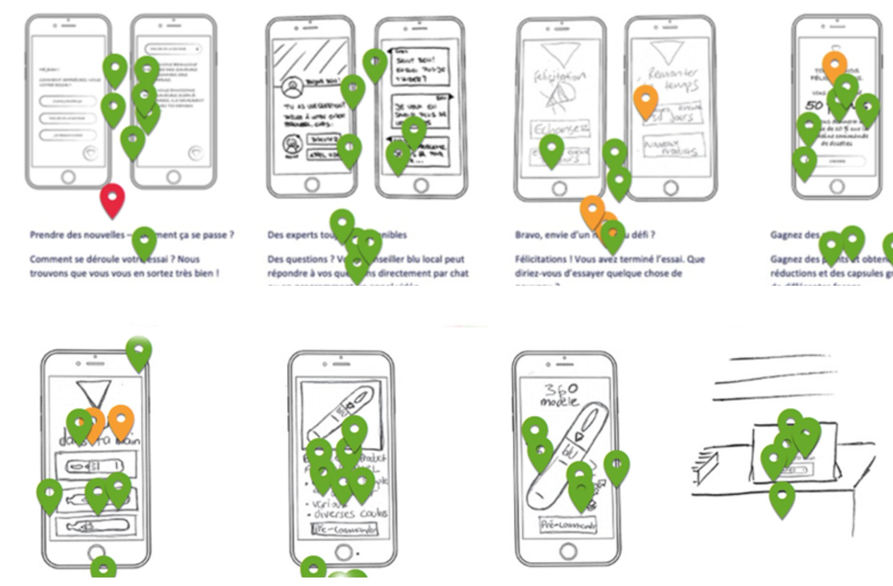
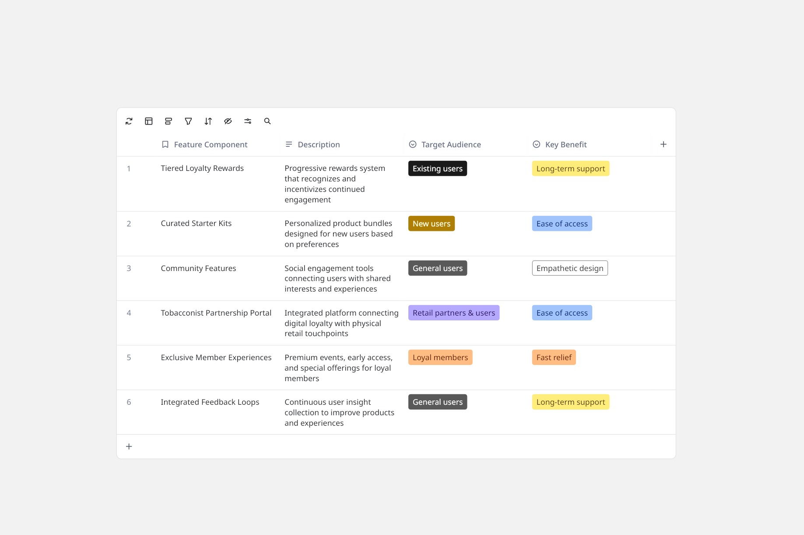
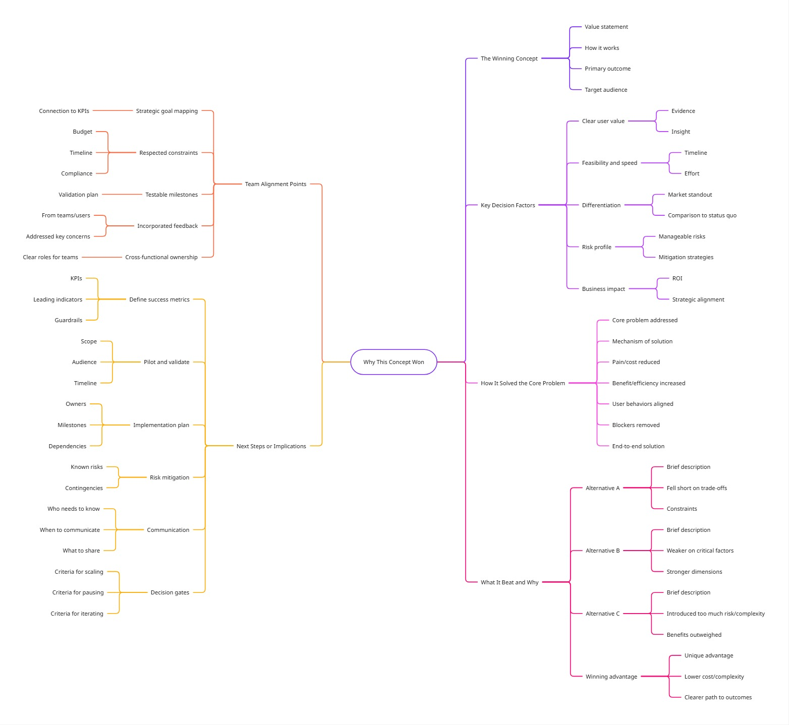
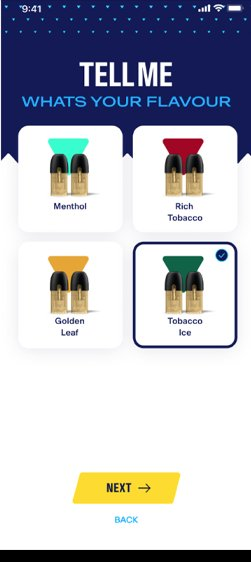
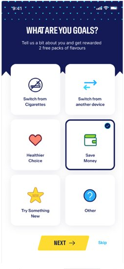
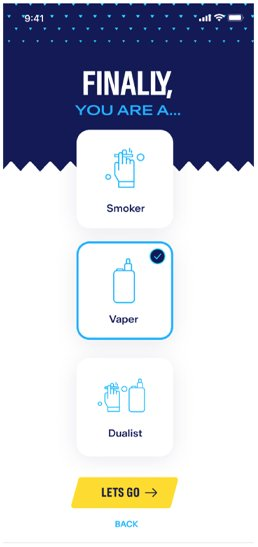

Blu Vape Brand Reimagination
87% user approval in one week. A validated brand direction, full stakeholder alignment, and a testable prototype — all from a single 5-day Google Design Sprint.
A 5-Day Google Design Sprint — moving from ambiguity to a validated product and loyalty direction in one week, within a regulated vaping industry environment.

Design Process
How I approached this project
A brand losing ground in a shifting market
Blu Vape was experiencing declining market share driven by increased competition, shifting customer expectations, and weakening brand loyalty. Existing experiences were heavily product-focused, with limited emotional connection, long-term engagement, or community value.
We're losing market share to competitors who better understand what customers want. Our brand feels outdated, and the experience is fragmented.
— Marketing Director, Blu VapeA 5-day design sprint was chosen to create alignment quickly, explore bold ideas safely, and validate direction before committing to further investment. This project required careful navigation of the regulated vaping industry — balancing UX goals with mandatory age verification, marketing restrictions, and consumer protection requirements.
The 5-Day Sprint Framework
One focused day per phase
Each phase of the sprint was completed in one focused day, forcing rapid alignment, intentional scope control, and decisive prioritisation.
Understand — Mapping the challenge
I facilitated strategic alignment sessions with C-level stakeholders and department leads, ensuring buy-in across marketing, product, and retail teams. I led customer journey mapping exercises that identified friction points, emotional drop-offs, and missed opportunities across the end-to-end experience.
Key activities: stakeholder interviews, competitive analysis of loyalty and trial models, customer journey mapping, synthesis into clear problem statements.


How might Blu Vape build long-term relationships and brand loyalty, rather than one-off transactions?
— Sprint alignment outcome, Day 1Diverge — Exploring wide-ranging solutions
We ran collaborative ideation sessions focused on loyalty, product trial, and tobacconist engagement. To avoid groupthink, each team member worked independently before sharing ideas — then used thematic clustering to identify patterns.

Three key themes emerged: customer loyalty (personalised rewards and community), product trial (starter kits and sampling to reduce barriers), and retail partnerships (tools and resources for tobacconists).
Decide — Converging on the best direction
All concepts were evaluated using dot voting and a decision matrix assessing desirability, business value, and technical feasibility. The winning concept — an Integrated Loyalty Ecosystem — connected digital experiences with physical retail touchpoints.
Why it won: delivered the strongest long-term brand differentiation, balanced customer value with realistic implementation, could be meaningfully prototyped and tested within two days, and unified loyalty, trial, and retail into a single system.
The key decision: The Integrated Loyalty Ecosystem won over simpler alternatives because it was the only concept that addressed all three stakeholder groups simultaneously — customers, new users, and tobacconist partners — without requiring a complete product rebuild to test. A standalone app redesign was rejected: it would have taken months to validate and risked committing the business to a direction before any user evidence existed. The sprint model let us compress that risk into two days.
The decision matrix and concept selection process mapped all options across desirability, feasibility, and business value — making the selection criteria transparent and defensible to all stakeholders.


Prototype — Building to learn
With limited time, my focus was on building just enough fidelity to test usability, value perception, and emotional response. I prioritised clarity, flow, and brand tone over exhaustive screen coverage. Mid-fidelity wireframes validated information architecture, then high-fidelity screens reflected the refreshed brand direction.

High-fidelity mobile screens showcasing the refreshed brand experience:

Onboarding

30-day trial

Flavour selection

Goal selection
Test — Validating with real users
We conducted moderated usability testing with 8 participants including existing customers, potential new users, and tobacconist representatives. Each session lasted approximately 45 minutes focused on onboarding, loyalty engagement, and retail integration flows.
User feedback confirmed that the concept shifted perception from "selling products" to "building a relationship." Areas flagged for improvement: simplify reward redemption, clarify community guidelines, strengthen onboarding guidance.
From ambiguity to validated direction in 5 days
"Andrew's facilitation transformed our week. He navigated conflicting stakeholder priorities with diplomacy, kept us focused under tight deadlines, and delivered a prototype that exceeded expectations. The 87% user approval speaks for itself — this sprint gave us the confidence to invest in a complete brand transformation."
Takeaways